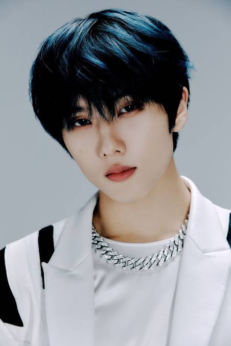

Jeno

Jeno Lee merupakan salah satu anggota NCT DREAM yang bergabung dengan SM Entertainment pada tahun 2013. Ia resmi debut pada 25 Agustus 2016 bersama NCT DREAM. Jeno dikenal sebagai rapper, dancer, dan performer berbakat. Rap-nya yang khas serta gerakan tariannya yang kuat menjadi daya tarik tersendiri. Ia juga memiliki karisma panggung yang memukau. Sejak debut, Jeno terus menunjukkan perkembangan dan dedikasinya. Di luar panggung, ia dikenal hangat, rendah hati, dan penuh perhatian. Kehadirannya memberikan warna tersendiri bagi NCT DREAM. Kerja kerasnya menjadi bagian dari perjalanan dan kesuksesan grup. Jeno bukan sekadar anggota, tetapi juga bagian penting dari cerita NCT DREAM.
Renjun

Renjun merupakan anggota NCT DREAM asal Tiongkok yang resmi debut pada 25 Agustus 2016. Ia dikenal sebagai vokalis utama dengan suara yang lembut, jernih, dan penuh penghayatan. Kemampuan vokalnya memberikan warna tersendiri dalam lagu-lagu NCT DREAM. Ia juga memiliki kemampuan menari yang baik dan ekspresi panggung yang menarik. Suaranya menjadi salah satu ciri khas dalam harmoni grup. Renjun selalu berusaha memberikan penampilan terbaik di atas panggung. Ia dikenal memiliki kepribadian yang jujur, perhatian, dan penuh pemikiran. Kehadirannya memberikan keseimbangan dalam grup. Dedikasinya menjadi bagian penting dari perjalanan NCT DREAM. Renjun adalah sosok yang memberikan kehangatan melalui suara dan kehadirannya.
Haechan

Haechan merupakan anggota NCT DREAM yang resmi debut pada 25 Agustus 2016. Ia dikenal sebagai vokalis utama dengan warna suara yang unik dan khas. Kemampuan vokalnya memberikan karakter kuat dalam lagu-lagu NCT DREAM. Ia juga memiliki kemampuan menari serta ekspresi panggung yang memikat. Haechan mampu menghadirkan nuansa berbeda dalam setiap penampilannya. Selain berbakat, ia dikenal ceria, penuh energi, dan humoris. Kehadirannya sering membawa suasana hangat di antara para anggota. Dedikasinya dalam bermusik membuatnya menjadi bagian penting dari identitas NCT DREAM. Ia juga dikenal melalui kemampuannya menjaga harmoni vokal grup. Haechan adalah sosok yang memberikan warna melalui suara, energi, dan karismanya.
Jaemin

Jaemin merupakan anggota NCT DREAM yang resmi debut pada 25 Agustus 2016. Ia dikenal sebagai rapper, dancer, dan performer dengan karisma yang khas. Kemampuan rap serta gerakan tariannya memberikan daya tarik dalam penampilan grup. Ia juga memiliki visual panggung yang mudah dikenali. Jaemin terus menunjukkan perkembangan dan dedikasinya sejak debut. Di luar panggung, ia dikenal penyayang, perhatian, dan gemar menunjukkan kepedulian kepada orang lain. Ia memiliki sisi ceria yang membuat suasana semakin menyenangkan. Kehadirannya turut memperkuat kekompakan NCT DREAM. Kerja kerasnya menjadi bagian dari perjalanan panjang grup tersebut. Jaemin bukan hanya dikenal karena pesonanya, tetapi juga karena kontribusi dan ketulusannya.
Chenle

Haechan merupakan anggota NCT DREAM yang resmi debut pada 25 Agustus 2016. Ia dikenal sebagai vokalis utama dengan warna suara yang unik dan khas. Kemampuan vokalnya memberikan karakter kuat dalam lagu-lagu NCT DREAM. Ia juga memiliki kemampuan menari serta ekspresi panggung yang memikat. Haechan mampu menghadirkan nuansa berbeda dalam setiap penampilannya. Selain berbakat, ia dikenal ceria, penuh energi, dan humoris. Kehadirannya sering membawa suasana hangat di antara para anggota. Dedikasinya dalam bermusik membuatnya menjadi bagian penting dari identitas NCT DREAM. Ia juga dikenal melalui kemampuannya menjaga harmoni vokal grup. Haechan adalah sosok yang memberikan warna melalui suara, energi, dan karismanya.
Jisung

Jisung merupakan anggota termuda NCT DREAM yang resmi debut pada 25 Agustus 2016. Ia dikenal sebagai dancer dengan kemampuan dan gerakan yang sangat khas. Keluwesan serta kekuatan tariannya menjadi daya tarik dalam setiap penampilan. Jisung juga memiliki suara yang memberikan warna tersendiri pada lagu grup. Sejak debut di usia muda, ia terus menunjukkan perkembangan sebagai seorang performer. Ia dikenal memiliki kepribadian yang sederhana dan sedikit pemalu. Di balik sifatnya tersebut, Jisung memiliki semangat dan dedikasi yang besar. Kemampuannya turut memperkuat kualitas penampilan NCT DREAM. Perjalanannya menunjukkan perkembangan dari seorang anak menjadi performer yang matang. Jisung menjadi salah satu warna istimewa dalam perjalanan NCT DREAM.